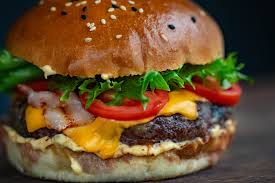
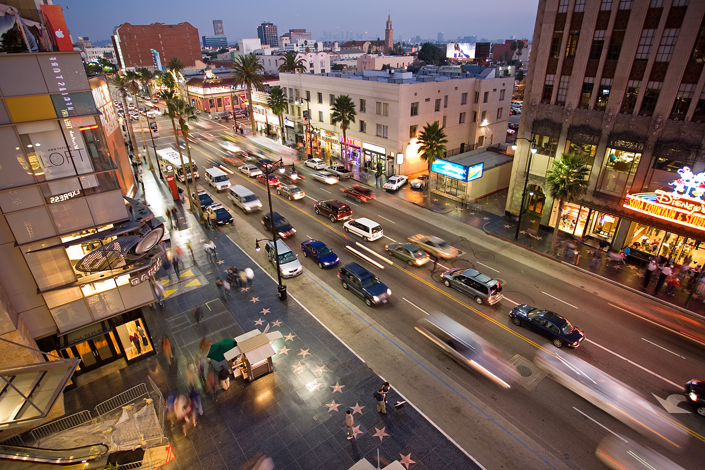

Food
Cheese Burger
Cheese burger is one of America's staple food. And there is a lot of places to get them from. And their is many different style you can get them too. One of my favorite place I like to get is from In and Out which is an American chain and is in Los Angeles.
First Must Go Location
Disneyland Park
Disneyland Park is a place you should try at least once. If your a fan of the Disney movie then you should go check this place out. There is a lot of Disney attraction and rides to do over there. Which makes you feel like your actually in a Disney movie.

Second Must Go Location
Hollywood Boulevard
This place you should go at least once when your in Los Angeles. Their is a lot of sight seeing in this area and many souvenirs that you can get. The boulevard has a lot of plaque of many famous actors, actress, director and movie people.
